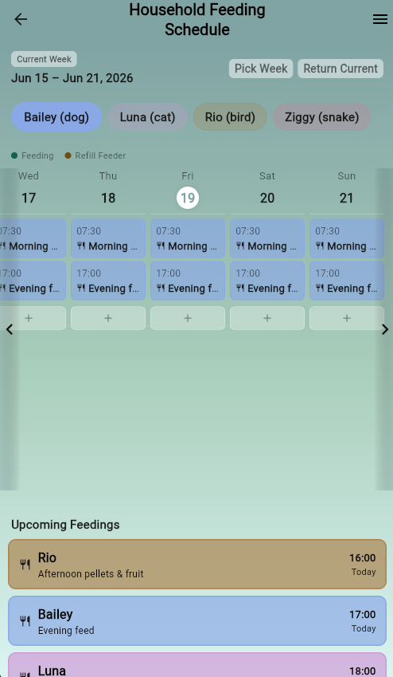
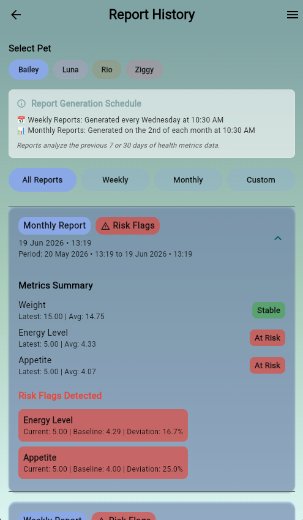
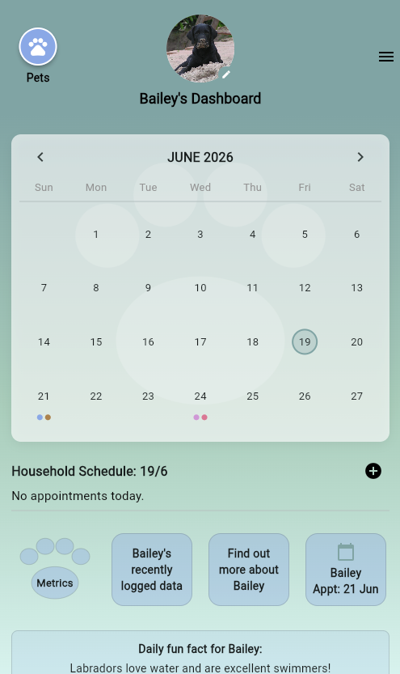

My Projects



Click me to view
PetSync (SETAP-B)
- Purpose: A central mobile hub for tracking pet health metrics, managing vet appointments, and scheduling care with shared responsibility.
- User-Driven Design: Identified three distinct owner monitoring styles—Intuition-based, Mental record keepers, and Data-driven—to ensure the app catered to both simple logging and advanced analytics.
- Tech Stack: Built on a microservices-inspired architecture using Flutter/Dart for cross-platform UI, and Python/FastAPI with PostgreSQL for robust backend operations.
- Key Features: Implemented species-specific intelligence to filter irrelevant metrics, automated threshold checks for early health risk detection, and offline caching for reliable data access.
- Performance & Reliability: Optimized for a 2-second dashboard load time (NF2) and ensured system resilience through an Event Broker for asynchronous tasks.
- Resources: GitHub Repository | Documentation